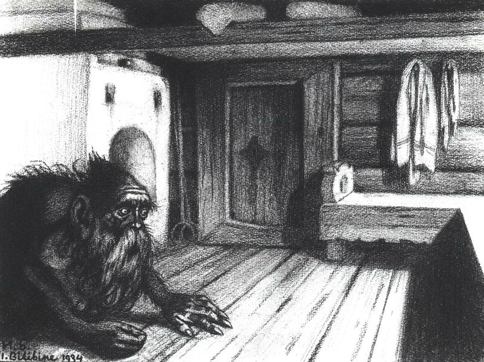

дух, живущий под печкой
Ночью Подпечник не дает покоя людям дурным, порочным, сделавшим какое-либо преступление. Подпечник грезится им, являясь перед ими в ужасающих видах, выделывая пред ними разные страшные жесты, бегая по стене, летая над их головами и своею мохнатой бородой щекоча лица их.
Представляют его как мохнатого, с красной головой и огненными сверкающими глазами; вместо передних лап у него человеческие руки, а вместо задних — человеческие ноги, только с длинными когтями.